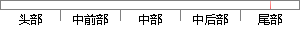

同时，括号内的数值表明，由C5.
片段位置图

相似结果|
相似片段 1：3．3．2情景2我们还运用情景2的数据对Weiner的理论假设(结构方程1)进行了同样的分析，得出了与情景1十分相似的结果，见图l括号中的数值。这里各种吻合指数(见表3)表明理论假设与情景2的数据
相似片段 2：量的部分可由(2)式导出(详见文献【14])，在同时考虑(7)式时，(8)式中的三次项、二次项和部分一次项将被消去，能量方程仍然表现为线性性质．这一点在下面给出的数值试验中也将被表明．3期 孙 凯
相似片段 3：增大的趋势，表明R&D强度对三者的影响也是逐渐增强的。表4．8加入控制变量后R＆D支出及特征对资产负债率影响的分位数回归结果(注：括号内的数值表示为P值，，、料、料+分别代表参数值在lO％、5％、1
相似片段 4：名，括号内数字为相似度数值，相似度数值越小表明越相似：2(1．0010985429655035)I(1．667559t959489524)3(2097969201474929)可以看出，纹理特征
相似片段 5：的数据则表示墙板编号。二维数组表达式D_Ac-qhlaifen[6】[10】中第一个中括号里的数值为D-Shu的值，表明数据来自同一段窗洞墙体，第二个中括号里的数值为墙板编号。当遇到窗洞时，对于窗洞上部
|
※ 片段修改建议 ※
近似词参考：- 表明：表白 讲明 解释 评释 注解
系统自动生成语句：同时，括号内的数值表白，由C5.
注：本片段修改建议为系统自动生成，仅供参考。